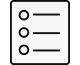
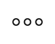

하단 메뉴를 누르면 해당 설명으로 이동합니다.
관리할 공간이나 해야 할 일의 종류에 맞는 카테고리를 입력한 후, 해당 카테고리 내에 할 일을 입력하여 집안일 리스트를 만듭니다.
실제 거주공간에 맞게 공간 및 대상을 설정합니다.
▶ 하단  아이콘>내 아바타>공간/대상 관리하기
카테고리 내에 해야 할 집안일을 입력하고 시작일과 반복주기를 입력합니다.
▶ 하단 아이콘>내 아바타>집안일 리스트 추가하기
현재 등록한 모든 집안일 리스트를 수정 및 삭제 합니다.
▶ 하단 아이콘>상단 우측 모든 집안일 보기
시작일과 반복주기를 미리 입력해둔 리스트를 내 리스트에 추가합니다.
▶ 하단 아이콘>내 아바타>추천 리스트 추가하기
카테고리를 좌우로 이동하며 원하는 리스트를 체크 후 추가하기를 누르면 해당 집안일 리스트가 내 리스트에 저장됩니다.
기본 : 반복주기를 기본으로 설정 (기본 주기에 맞춰 할 일이 돌아옴)
꼼꼼 : 반복주기를 기본보다 짧게 설정 (기본보다 자주 할 일이 돌아옴)
추천일정으로 입력한 집안일은 모든 집안일 보기 페이지에서 수정/삭제가 가능합니다.
집안일 추가하기에서도 추천리스트를 선택할 수 있습니다. (추천리스트가 저장되어있는 카테고리에 한정)
▶ 하단 아이콘>내 아바타>집안일 리스트 추가하기>추천 리스트 보기
해야할 일을 마친 후 완료표시를 합니다. 할 일을 다음날이나 특정 일로 미루거나 안할 수 있으며, 파트너에게 공유할 수 있습니다.
오늘의 할 일은 홈화면 상단에서도 보여집니다.
▶ 하단 아이콘>할 일 아이콘 선택(일별 집안일 보기)
파트너를 맺으면 집안일을 공유하여 함께 할 수 있습니다.
해당 할 일을 눌러 파트너를 선택 후 파트너를 선택하면 할 일이 상대방에게 전송됩니다. 상대방의 집안일 리스트에 해당 할 일이 나타나며 완료할 경우 내 할 일에도 완료표시가 나옵니다.
▶ 하단 아이콘>할 일 아이콘 선택>파트너 선택
할 일 공유시 상대방의 집안일 리스트에 해당 할 일이 나타나며 완료할 경우 내 할 일에도 완료표시가 나옵니다.
할 일을 선택하여 파트너를 추가하거나, 더보기 페이지에서 파트너를 추가할 수 있습니다.
문자메시지나 SNS 메시지를 통해 파트너를 신청합니다. 메시지 전송이 불가능한 경우
상대방의 개인코드를 입력하여 파트너를 맺을수 있습니다.
▶ 하단 아이콘>파트너만들기
나만의 집안일 팁을 공유하거나 집안일을 하며 드는 생각이나 느낌을 공유합니다. 세가지 주제 중 하나를 선택 후 하고싶은 이야기를 남깁니다.
▶ 하단 아이콘>내 아바타>글쓰기
또한 다른 이용자들의 게시글에 답글을 남겨 소통합니다
초록지붕에서 제공하는 기본적인 집안일 팁과 추천 영상 링크를 통해 집안일에 대한 정보를 얻을 수 있습니다.
▶ 하단 아이콘>상단탭(초록이팁,추천영상)
나만의 아바타를 꾸밀 수 있습니다.
▶ 하단 아이콘>아바타 편집
상점에서 더 많은 아이템을 구합니다. 매일 앱을 사용하면 생기는 포인트로 구매할 수 있습니다.
▶ 하단 아이콘>상점아이콘
포인트를 모으면 아바타를 꾸미기 위한 아이템을 구매할 수 있으며, 초록지붕 이벤트에 참여할 수 있습니다. (이벤트는 시기마다 간헐적 오픈)
영상광고를 시청하거나 뽑기 게임을 진행하여 포인트를 받을 수 있습니다.
▶ 하단 아이콘>포인트 모으기 아이콘
또한 오늘의 할 일을 완료하면 매일 100포인트가 제공됩니다.